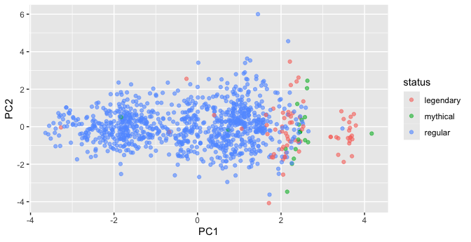
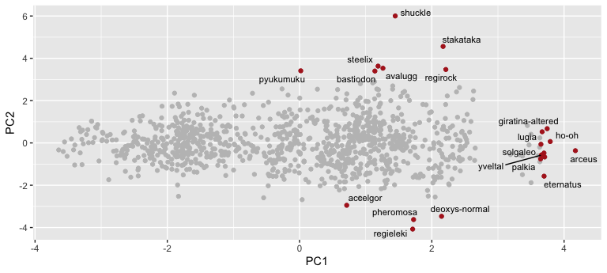
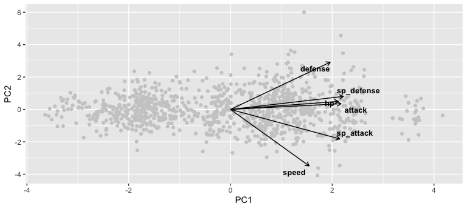

library(tidyverse)
library(plotly)
library(ggrepel)
pokemon <- read_csv("data/pokemon_1025.csv") %>%
mutate(status = case_when(
is_legendary ~ "legendary",
is_mythical ~ "mythical",
TRUE ~ "regular"))
poke_stats <- pokemon %>%
select(hp, attack, defense, sp_attack, sp_defense, speed)
poke_pca <- prcomp(poke_stats, center = TRUE, scale. = TRUE)Lecture 28 — PCA II: Loadings, Scores, and the Biplot
What PC2 means, and finally drawing the picture
pca
multivariate
prcomp
biplot
ggplot
plotly
pokemon
The second half of PCA on all 1,025 Pokemon, still assuming no statistics background. Reading a loadings table properly, recognising that a mix of positive and negative loadings means a trade-off rather than a total, naming PC2 and confirming it from Shuckle and Regieleki, plotting the scores coloured by legendary status, hovering versus labelling extremes with ggrepel, building a biplot by hand so the arrows are not magic, and writing a PCA up when there is no p-value to lean on.
Where We Left Off
- Six correlated stats on 1,025 Pokémon — impossible to plot
- PCA found new axes along the directions of most spread
prcomp(poke_stats, center = TRUE, scale. = TRUE)- PC1 = 44.1%, PC2 = 18.4%, together 62.5%
- PC1 had all-positive loadings → “overall power”
- checked it: Magikarp near the bottom, the legendaries at the top ✅
Note
✅ Transition
Two things are missing: what PC2 means, and a way to see the six original stats on the picture. Both today. 🔴
Goals for Today
- Read a loadings table properly
- Learn the one rule: mixed signs mean a trade-off
- Name PC2 from its loadings, then prove it from the data
- Plot the Pokémon in PC space, coloured by status
- Hover to explore, label to publish — with
ggrepel - Build a biplot by hand, so the arrows are not magic
- Write up a PCA when there is no p-value to lean on
Tools today:
tidyverse,plotlyggrepel— install this
Data: 🔴 the same 1,025 Pokémon
Important
⚠️ Install first
install.packages("ggrepel")We Have to Re-run It
Note
🧠 Every script starts from the raw data
- Nothing today depends on objects left over from last class
- Restart R, run from the top, get the same answer
🧩 Chunk 1 of 4 · Reading the Loadings
We will cover: the loadings table in full, the mixed-sign rule, and naming PC2.
The Loadings Table
round(poke_pca$rotation[, 1:3], 2) PC1 PC2 PC3
hp 0.42 0.10 0.26
attack 0.43 0.07 0.64
defense 0.39 0.58 -0.03
sp_attack 0.43 -0.36 -0.39
sp_defense 0.44 0.16 -0.58
speed 0.31 -0.70 0.15
Note
One row per original stat. One column per PC.
- A loading = how much that stat contributes to that axis
- big number → matters a lot; near zero → barely involved
- the sign → which direction
PC1: All the Same Sign
Read down the PC1 column:
| Stat | Loading |
|---|---|
sp_defense |
0.44 |
attack |
0.43 |
sp_attack |
0.43 |
hp |
0.42 |
defense |
0.39 |
speed |
0.31 |
- Every one positive, all about the same size
- To score high on PC1 you must be high on everything
Important
✅ The rule for all-positive
All loadings the same sign → a “total” axis
- overall size, overall strength, overall abundance
- PC1 is very often a total — the biggest way things differ is usually just how much of them there is
PC2: Mixed Signs
Now read down PC2:
| Stat | Loading | |
|---|---|---|
defense |
+0.58 | ⬆️ |
sp_defense |
+0.16 | |
hp |
+0.10 | |
attack |
+0.07 | |
sp_attack |
−0.36 | ⬇️ |
speed |
−0.70 | ⬇️ |
- One big positive, two big negatives, on the same axis
hpandattackare near zero — barely involved
Important
✅ The rule for mixed signs
Mixed signs → a trade-off, not a total
- PC2 does not measure how much
- it measures which kind — strong one way instead of another
- high PC2 =
defense - low PC2 =
speed+sp_attack
Naming PC2
- High PC2 → tough but slow
- Low PC2 → fast, special-attacking, but fragile
- Anyone who plays the game has names for these:
- high → a tank
- low → a glass cannon
- PC2 is a “tank ↔︎ glass cannon” axis
- it carries 18.4% of all the variation in six columns
Warning
⚠️ You named it. The maths did not.
prcomp() returned a column labelled PC2. It has no idea what a tank is.
Naming an axis is interpretation, and it is your job — the most valuable thing you do in a PCA, and the easiest place to fool yourself.
Prove It From the Data
poke_scores <- pokemon %>%
mutate(PC1 = poke_pca$x[, 1],
PC2 = poke_pca$x[, 2])
poke_scores %>%
arrange(desc(PC2)) %>%
select(name, defense, speed, PC2) %>%
head(4)# A tibble: 4 × 4
name defense speed PC2
<chr> <dbl> <dbl> <dbl>
1 shuckle 230 5 6.00
2 stakataka 211 13 4.56
3 steelix 200 30 3.63
4 avalugg 184 28 3.53And the Other End
poke_scores %>%
arrange(PC2) %>%
select(name, defense, speed, PC2) %>%
head(4)# A tibble: 4 × 4
name defense speed PC2
<chr> <dbl> <dbl> <dbl>
1 regieleki 50 200 -4.07
2 pheromosa 37 151 -3.62
3 deoxys-normal 50 150 -3.47
4 accelgor 40 145 -2.95That Is a Confirmed Axis 🪨⚡
- Top of PC2: Shuckle, Stakataka, Steelix, Avalugg
- defence 184 to 230, speed 5 to 30
- Shuckle is a turtle in a rock. Steelix is an iron snake
- Bottom of PC2: Regieleki, Pheromosa, Deoxys, Accelgor
- defence 37 to 50, speed 145 to 200
- Built from nothing but six columns of numbers
Important
✅ The two-step, every time
- Read the loadings → a guess about what the axis means
- Look at the extremes → check the guess against things you know
If step 2 disagrees with step 1, believe step 2.
🧩 Chunk 2 of 4 · The Picture
We will cover: the scores plot, coloured by something PCA never saw.
Colour by Something You Know
ggplot(poke_scores, aes(x = PC1, y = PC2, color = status)) +
geom_point(alpha = 0.6)
What You Are Looking At
- Every dot is one Pokémon, on two invented axes
- left ↔︎ right = weak ↔︎ strong (PC1, 44.1%)
- bottom ↔︎ top = glass cannon ↔︎ tank (PC2, 18.4%)
- Legendaries and mythicals sit on the far right
- and a little below the middle on PC2 (−0.25 vs +0.03)
- the strongest lean slightly towards fast over tank
- (0, 0) is the average Pokémon, not zero power
Important
✅ status was never in the PCA
poke_stats has six columns, and status is not one of them. We only used it to colour the result.
That is the right way round: build the axes from measurements, then colour by what you care about.
Put the group into the PCA and you have built the answer you wanted.
🧩 Chunk 3 of 4 · Who Is That Dot?
We will cover: hovering to explore, labelling to publish.
Hover to Explore
pca_plot <- ggplot(poke_scores,
aes(x = PC1, y = PC2, color = status, text = name)) +
geom_point(alpha = 0.6)
ggplotly(pca_plot, tooltip = "text")Hover or Label?
- Hover (
ggplotly) is for you, exploring- check any dot in a second
- find Shuckle alone at the top, Regieleki at the bottom
- Labels are for a reader
- a figure in a report or poster cannot be hovered
- but 1,025 labels = a solid black rectangle
- So label only the extremes
Note
🧠 abs() and quantile()
abs(PC1)= distance from the centre, ignoring directionquantile(abs(PC1), 0.99)= the value only 1% of Pokémon exceed- together: “far from average on PC1, either way”
Pick the Extremes
extremes <- poke_scores %>%
filter(abs(PC1) > quantile(abs(PC1), 0.99) |
abs(PC2) > quantile(abs(PC2), 0.99))
nrow(extremes)[1] 22
Note
🧠 The | means OR
- a Pokémon is kept if it is extreme on either axis
- top 1% on each axis → 22 Pokémon out of 1,025
Now Label Just Those
ggplot(poke_scores, aes(x = PC1, y = PC2)) +
geom_point(color = "grey75") +
geom_point(data = extremes, color = "firebrick") +
geom_text_repel(data = extremes, aes(label = name), size = 3)
How That Plot Is Built
Three layers — later layers draw on top:
geom_point(color = "grey75")— all 1,025, in the backgroundgeom_point(data = extremes, ...)— the 22, in redgeom_text_repel(data = extremes, ...)— names for only those
geom_text_repel() = geom_text() that nudges labels apart and draws a line back to the dot.
Tip
🎯 data = inside a layer
Each geom_ can take its own data =, and then ignores the data in ggplot().
That is how you draw two subsets on one plot — and it works for every geom.
🧩 Chunk 4 of 4 · The Biplot
We will cover: putting the original six stats back onto the picture.
The Problem a Biplot Solves
- Our plot shows where Pokémon sit
- It does not show which way each original stat points
- A biplot draws both at once:
- points = the Pokémon (the scores)
- arrows = the original stats (the loadings)
- An arrow points the way that stat increases
Note
🧠 “Bi”-plot
Two things on one plot.
R has a built-in biplot(poke_pca), but it is ugly and hard to control. We build ours from the loadings — so you know exactly what the arrows are.
Turn the Loadings Into Arrows
arrows_df <- as_tibble(poke_pca$rotation[, 1:2], rownames = "stat") %>%
mutate(PC1 = PC1 * 5,
PC2 = PC2 * 5)
arrows_df# A tibble: 6 × 3
stat PC1 PC2
<chr> <dbl> <dbl>
1 hp 2.12 0.496
2 attack 2.17 0.351
3 defense 1.96 2.92
4 sp_attack 2.15 -1.82
5 sp_defense 2.22 0.803
6 speed 1.55 -3.49
Warning
⚠️ Why * 5
- loadings run about −0.7 to +0.6; scores run about −4 to +6
- at true length, the arrows vanish into a dot at the centre
- × 5 is purely cosmetic — it changes lengths on screen, never directions, and directions are what you read
The Biplot
ggplot(poke_scores, aes(x = PC1, y = PC2)) +
geom_point(color = "grey80") +
geom_segment(data = arrows_df,
aes(x = 0, y = 0, xend = PC1, yend = PC2),
arrow = arrow(length = unit(0.2, "cm"))) +
geom_text_repel(data = arrows_df, aes(label = stat),
fontface = "bold", size = 3.4)
Reading the Arrows
- Every arrow points right
- all six stats increase with PC1 — the all-positive loadings, made visible
defensepoints up-right,speeddown-right- nearly opposite vertically — the trade-off
sp_attackleans withspeedhpandattackpoint almost straight right- they are about power, not about the trade-off
speedhas the longest arrow,hpandattackthe shortest
Important
✅ Angles, not positions
- arrows close together → correlated stats
- arrows at right angles → unrelated
- arrows opposite → trade-off
A Trap Worth Naming
speedanddefense: real correlation 0.01- completely unrelated
- On the biplot their arrows point in nearly opposite directions
- that looks like a strong trade-off
- Both are true
- the biplot is a shadow — 2 of 6 dimensions
- arrows can look opposed in the shadow while unrelated in 6-D
Warning
⚠️ Always say how much you are showing
“PC1 and PC2, which together explain 62.5% of the variance”
Without that number, a reader cannot tell whether the biplot is the whole story or two-thirds of it.
Writing Up a PCA
Important
📝 No p-value, so the structure is different
Six battle statistics for all 1,025 Pokémon were standardised and reduced by principal component analysis. The first two components explained 62.5% of the total variance (PC1 44.1%, PC2 18.4%). PC1 loaded positively on all six statistics (0.31 to 0.44) and is interpreted as overall power: the 71 legendary Pokémon averaged PC1 = 2.38 against −0.24 for regular Pokémon, and Magikarp sat among the lowest scores. PC2 contrasted
defense(+0.58) againstspeed(−0.70) andsp_attack(−0.36), separating slow, durable species such as Shuckle and Steelix from fast, fragile ones such as Regieleki and Pheromosa.
What That Paragraph Does
- Says what went in — six stats, 1,025 Pokémon
- Says it was standardised (
scale. = TRUE) - Gives variance explained, per axis and cumulative
- Names each axis, with the loadings that justify the name
- Gives evidence from the data — real Pokémon at each end
- Never says “significant” — nothing was tested
Warning
⚠️ The two failure modes
Too little: “We ran a PCA and PC1 explained 44.1%.” Of what? Meaning what?
Too much: “PC1 proves power is one-dimensional.” PCA describes; it proves nothing.
Your Homework
- Add two real body measurements —
height_mandweight_kg- eight columns into the PCA instead of six
- Then do everything from today:
- read the loadings and name PC1 and PC2 yourself
- confirm from the extremes
- scores plot, hover plot, biplot
- write the results paragraph
- No answers printed anywhere — the naming is yours
Note
📂 How it works
- Questions at the top of the file
- Helper code where something is new
YOUR CODE= copy the matching section from today’s script
There is one Pokémon so far out it nearly breaks the plot. Find it.
Recap
- A loading is what an axis is made of; a score is where a Pokémon sits on it
- All loadings the same sign → a “total” axis. PC1 usually is
- Mixed signs → a trade-off. PC2 here is tank ↔︎ glass cannon
- Name from the loadings, confirm from the extremes — believe the extremes
- Build axes from measurements only; colour by your group afterwards
- Hover to explore; label only the extremes to publish
- A biplot = points (scores) + arrows (loadings). Read angles
- Arrows can look opposed in a 2-D shadow and be unrelated in 6-D — report the percentages
- Write-ups describe and justify. Nothing was tested, so nothing is significant ✅
Note
✅ Next
Open the activity and type it in. Then the homework: eight measurements, and you name the axes. 🔴